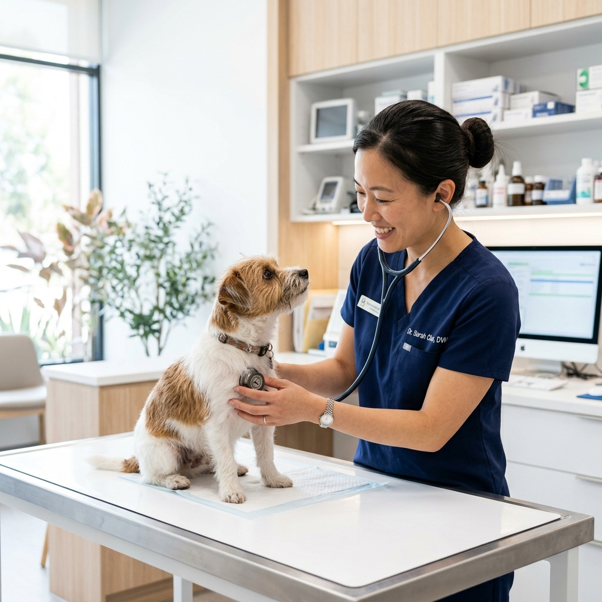
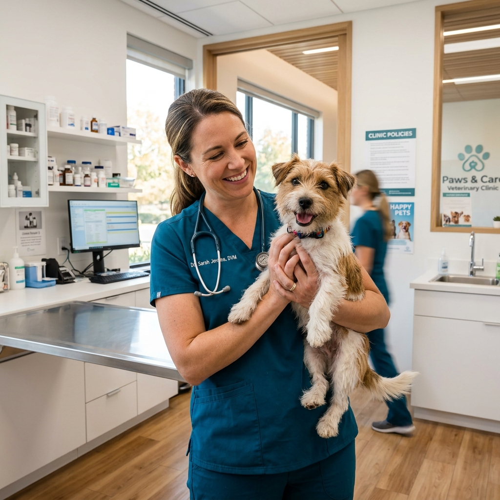
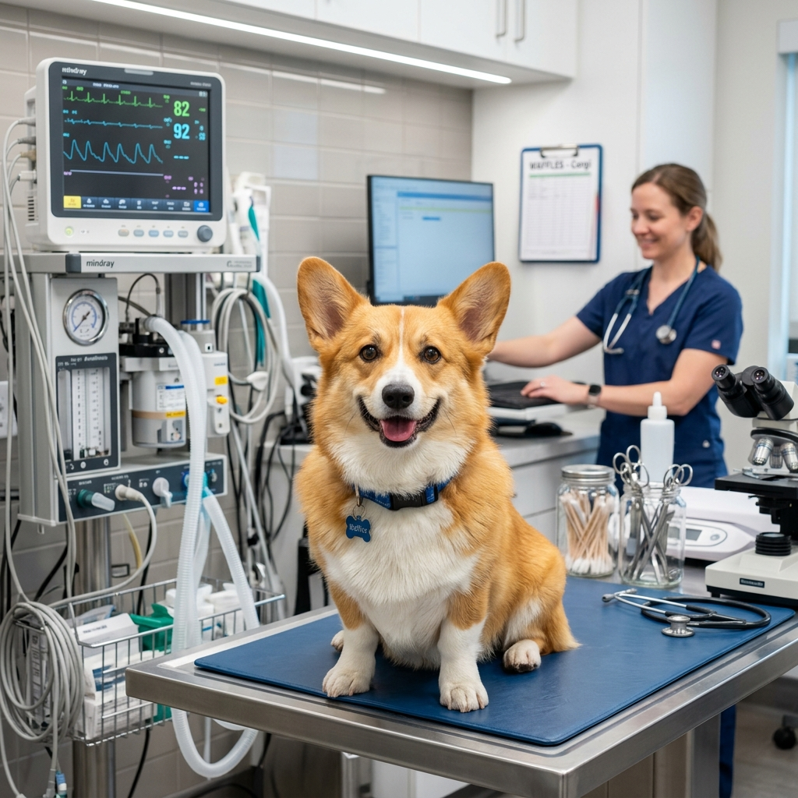

Atención Humanizada
Escuchamos detenidamente al tutor, observamos a la mascota con paciencia y explicamos todo de forma sencilla, cercana y sin tecnicismos.
Saber másDesde la consulta de rutina hasta urgencias y cirugías, cuidamos de tu mascota como parte de nuestra familia, con orientación clara y un verdadero acompañamiento.

Prevención, diagnóstico de precisión y acompañamiento continuo para que tu mascota viva más y mejor.

Escuchamos detenidamente al tutor, observamos a la mascota con paciencia y explicamos todo de forma sencilla, cercana y sin tecnicismos.
Saber másExámenes y evaluación clínica profunda para identificar la causa exacta del síntoma y tratar con precisión, evitando adivinanzas.
Ver exámenes
Rutina completa de vacunación, desparasitación y antipulgas con un calendario y esquema personalizado según la etapa de vida de tu peludo.
Ver calendarioProtocolos seguros, preparación minuciosa y seguimiento post-operatorio amoroso porque el cuidado no termina en el quirófano.
Entender el procesoRevisiones periódicas y monitoreo para ajustar el tratamiento si es necesario y garantizar una recuperación completa y tranquila.
Cómo funcionaAgenda tu cita sin complicaciones por WhatsApp, resuelve dudas médicas de primera mano y recibe orientación práctica con calidez.
Hablar ahoraPacientes Atendidos con Amor
Atención Personalizada
Línea de Urgencias WhatsApp
Calificación de Tutores
La tranquilidad de saber que tu mascota está en las mejores manos profesionales.
"La Dra. Diana examinó a mi perrita con una paciencia increíble. Me explicó exactamente el diagnóstico sin asustarme y el tratamiento funcionó desde el primer día."
"Excelente clínica veterinaria. Lo que más me gusta es que no te atienden a las carreras. Se nota el amor verdadero por los animales y la ética médica."
"Tenía una urgencia con mi gatito un domingo y la Dra. Diana nos atendió por WhatsApp con una calidez humana enorme. ¡Totalmente recomendada!"
Escríbenos directamente o visítanos en nuestra sede.
Lunes a Sábado: 8:00 AM - 7:00 PM
Urgencias Médicas: Disponibilidad 24/7